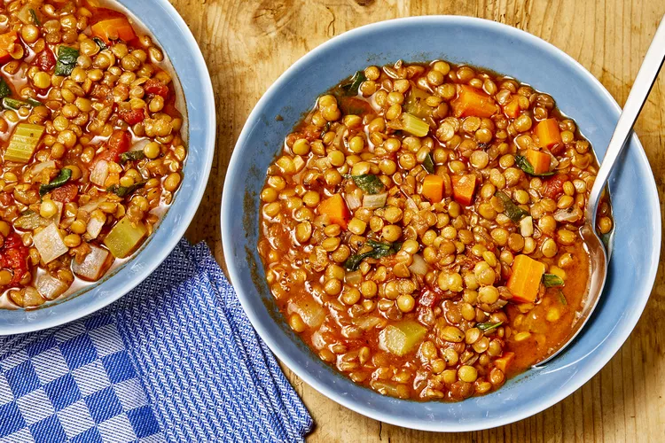

Lentil Soup Recipe

Description
This recipe is one of my favorite ones to produce. It comes in many different variations, it has so many different ways of putting together.
Putting together this recipe will be easy if you follow the steps below !
Ingredients
- 1/4 cup olive oil
- 1 onion, chopped
- 2 carrots, diced
- 2 stalks celery, chopped
- 2 cloves garlic, minced
<1i> 1 bay leaf
- 1 teaspoon dried oregano
- 1 teaspoon dried basil
- 2 cups dry lentils
- 8 cups water
- 1(14.5) can crushed tomatoes
- 2 tablespoons vinegar
- salt to taste
- ground pepper to taste
Steps
- Heat oil in a large soup pot over medium heat. Add onions, carrots, and celery; cook and stir until onion is tender, 3 to 5 minutes. Stir in garlic, bay leaf, oregano, and basil; cook for 2 minutes.
- Stir in lentils, and add water and tomatoes. Bring to a boil. Reduce heat and let simmer until lentils are tender, at least 1 hour.
- When ready to serve, stir in spinach and cook until it wilts. Stir in vinegar and season with salt and pepper; and adjust as needed.